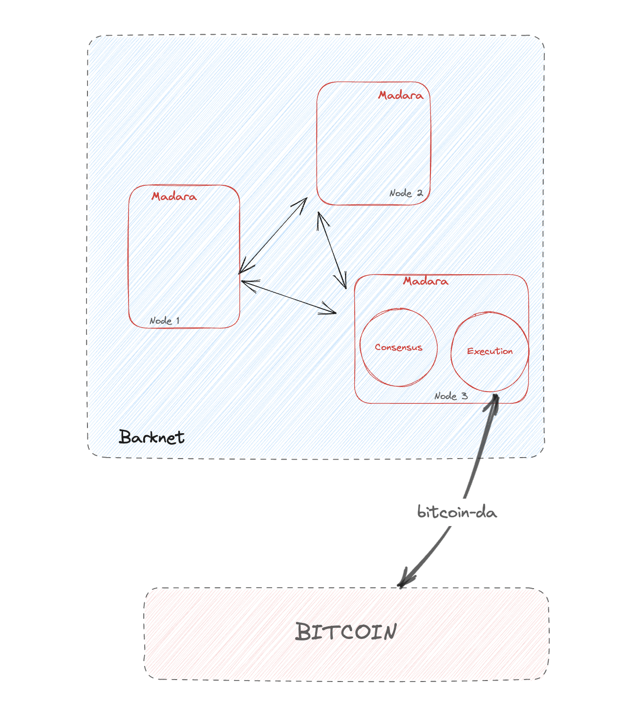

Barknet Last updated: 2023-07-10
Introduction
Barknet is a sovereign rollup based on the Madara engine and powered by Starknet. Proudly developed by Kasar Labs in collaboration with Taproot Wizards.
Prerequisites
Believing in magic 🧙
Bitcoin
Bitcoin is built on a decentralized network using a blockchain to securely and transparently record transactions. Transactions are verified by network nodes through cryptographic processes, and new bitcoins are generated through a process known as mining. Miners use significant computational power to solve complex mathematical problems, securing the network and validating transactions in exchange for new Bitcoin units. This technical design aims to create a stable, transparent, censorship-resistant, and fraud-resistant monetary system. The Taproot update on Bitcoin's network, enhanced its scalability, privacy, and composability. Taproot has opened the door to a new world that we are exploring through Barknet, that of registration. A striking example of the rise of this new technique is ordinals.
Starknet
Starknet is a Validity Rollup Layer 2. It provides high throughput, low gas costs, and retains Ethereum Layer 1 levels of security Given a sudoku puzzle, verifying a solution is easier than solving from scratch. If our goal is to convince people of the statement “this puzzle has been solved”, we can save a lot of computation by having one person compute a solution and then propagate it for others to verify. In this strategy, each computation of a solution becomes a one-time event which does not require replication by society. In a similar vein, Starknet scales Ethereum by replacing heavy L1 computation with lighter (hence cheaper!) L1 verification using STARK proofs computed off-chain. With the above analogy in mind, the time is ripe for some jargon. Starknet is a permissionless Validity-Rollup (also known as a “ZK-Rollup”) that supports general computation and currently operates in production as an L2 network over Ethereum. The eventual L1 security of Starknet is ensured by its use of the safest and most scalable cryptographic proof system – STARK. Starknet contracts are (for the most part) written in the Cairo language – A Turing complete programming language designed for STARK proofs.
Substrate
Substrate is a flexible, open-source framework developed by Parity Technologies for creating robust blockchains. It offers essential infrastructure through its Substrate Core and a range of pre-built modules via the Substrate Runtime Module Library (SRML). Substrate's modularity also allows easy network upgrades, changes, and the addition of new features. Furthermore, its extensibility ensures scalability and interoperability, both key aspects in the evolution of the Starknet ecosystem.
Rust
Is a systems programming language that emphasizes safety, speed, and concurrency. It is known for its powerful type system, memory safety guarantees, and minimal runtime. Rust's design prevents many common programming errors, like null pointer dereferencing and data races, which makes it an ideal choice for building reliable, high-performance systems.
In the context of Barknet, Rust provides a number of benefits:
- Memory Safety: Rust's ownership model guarantees memory safety without needing a garbage collector, which can be a bottleneck in high-performance systems.
- Concurrency: Rust has first-class support for concurrent and distributed systems, making it perfect for a distributed, concurrent environment like a blockchain.
- Interoperability: Rust has excellent interoperability with other languages, which can be useful in a multi-language, open-source project.
- Performance: Rust is designed to perform nearly as well as C++, making it suitable for a high-throughput system like a blockchain network.
- Community and Ecosystem: Rust has a strong and growing community of developers, and its package ecosystem, Crates.io, provides a wealth of libraries that can help speed up the development process.
Given these benefits, Rust is well-suited for implementing a Starknet full node. It allows Barknet to achieve high performance and reliability, while its strong memory safety guarantees help ensure the node operates as expected. Moreover, Rust's advanced concurrency features enable Barknet to efficiently process multiple transactions and requests concurrently, enhancing its ability to manage the Starknet state.
Bitcoin-da-rs
This crate allows Bitcoin to function as a data availability layer, supporting both write and read operations. It's been developed with Rust sequencers in mind, particularly for integration with Madara. It's modeled after rollkit's bitcoin-da-rs.
Architecture

Use Barknet
Have a starknet wallet (ArgentX for example) and enter the following information to use the correct rpc: "TODO". Then take advantage of the features, all your actions are then registered on Bitcoin, link : Barknet.io
Contribute to Barknet
Barknet has been built from the day 1 in the most open-source way possible, and will always follow the principles that drive the Starknet and Bitcoin ecosystem since day 1. Anyone is free to join the KasarLabs telegram group here, come chat, ask for help, discuss anything!
Developers
Barknet contributions are rewarded through OnlyDust.
What does that mean? It means that you as a developer are free to pick any open issue and submit a PR. Once the PR is merged you will be paid according to the time/difficulty of the PR. For now, Barknet team does not look for new contributors, but this could change in the future. If you are interested in joining the team, please reach out to us on Telegram.
Bug Hunting
Found a bug? Please submit an issue on GitHub so any open source contributor can look at it and fix it (you can too!)
Documentation
Missing anything in these docs? Spotted a typo? Please submit a PR or create an issue on GitHub. As everything we do, we grow together and the more eyes we have looking at it the better it will be.
The road towards production
Barknet is still at the development stage. So be cautious about going to production with such a system, thorough audits are highly recommended.